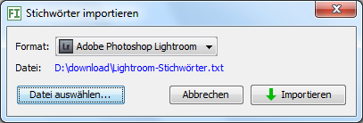

Mit diesem Dialog können Sie Stichwörter importieren, die ein anderes Programm exportiert hat. Die importierten Stichwörter werden eingefügt in den Stichwortbaum, falls sie dort nicht existieren, und Sie können diese von dort aus später Ihren Bildern zuweisen.

Die Formatbeschreibung ist nur wichtig für Sie, falls Ihr Programm ein anderes Format erzeugt und Sie dieses konvertieren wollen in eines, das importiert werden kann.
.txt
Im Beispiel sei ein Tabulator 4 Zeichen "lang"
Geroldshausen
Landschaft
Baum
Himmel
Wolke
Wasser
Fluss
Donau
Main
Rhein
Maibaum
Nürtingen